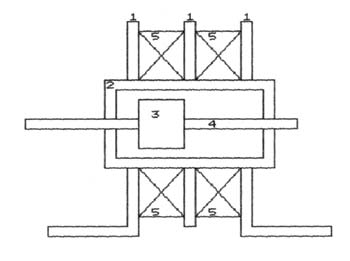
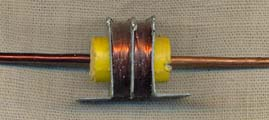
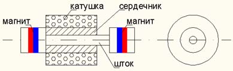
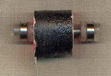
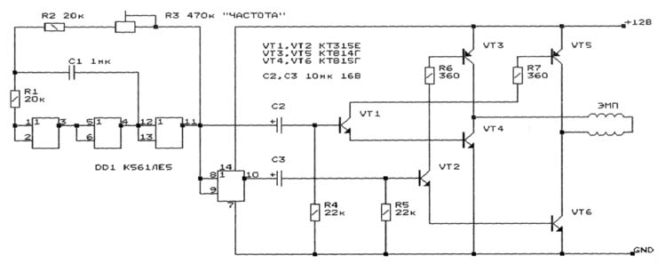
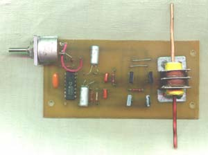

Двухпозиционный электромагнитный привод (затвор)
Макеты двухпозиционного электромагнитного (магнитоэлектрического) привода (ЭМП) с генератором импульсов управления собраны для опробования схем привода (затвора), способного находиться в одном из двух устойчивых положений без затраты энергии и переходить из одного положения в другое при подаче импульса тока в обмотку.
Вариант 1
Работоспособная конструкция двухпозиционного ЭМП приведена на рис. 1.

Рис. 1. Схема ЭМП (вариант 1): 1 - стальные щечки, 2 - текстолитовая втулка, 3 - самарий-кобальтовый магнит, 4 - шток привода, 5 - обмотки.
ЭМП состоит из трех стальных щечек (1) с отверстиями. Щечки закреплены соосно на текстолитовой втулке (2), внутри которой может перемещаться цилиндрический постоянный самарий-кобальтовый магнит (3), намагниченный аксиально до насыщения в установке намагничивания [5]. Магнит имеет два устойчивых положения - между соседними стальными щечками. Магнит крепится к штоку (4) из немагнитного материала, способному перемещаться во втулке с малым трением. Между щечками намотаны обмотки (5) привода. Расчеты параметров обмоток выполнялись с помощью программы Coil [1] с применением соответствующей методики [3] и программы M_Drive [2]. Направление намотки - встречное. Выводы обмоток припаяны к щечкам, используемым в качестве контактов для подключения ЭМП к схеме управления. Для изоляции обмоток от щечек используются прокладки из лакоткани. Обмотки включены последовательно. При подаче в обмотки импульса тока необходимой величины и соответствующей полярности на магнит действует сила, переводящая его из одного устойчивого состояния в другое. Для возврата магнита в предыдущее положение необходимо подать импульс тока противоположной полярности. Внешний вид данного ЭМП показан на рис. 2.

Рис. 2. Внешний вид ЭМП (вариант 1): размеры (без штока) 20 х 20 х 30 мм3.
При необходимости размеры привода могут быть изменены, например, существенно уменьшены.
Вариант 2
Еще одна возможная схема двухпозиционного ЭМП изображена на рис. 3.

Рис. 3. Схема ЭМП (вариант 2).
На цилиндрическом стальном сердечнике с осевым отверстием под шток намотана катушка. Расчет катушки выполнялся с помощью программы Coil [1]. На стальном штоке, способном перемещаться в осевом направлении внутри сердечника, закреплены два постоянных магнита состава неодим-железо-бор, намагниченных аксиально в установке намагничивания [5]. Направление магнитных полей постоянных магнитов встречное. В исходном положении один из магнитов притянут к сердечнику, при этом шток находится в одном из крайних устойчивых положений. При подаче в катушку импульса тока соответствующего направления и достаточной величины этот магнит отталкивается от сердечника, а противоположный магнит притягивается к нему. Таким образом, шток перемещается в другое крайнее устойчивое положение. Для регулировки силы притяжения магнитов к сердечнику и, соответственно, необходимой для переброски штока из одного положения в другое величины тока в катушке между магнитами и сердечником могут устанавливаться немагнитные прокладки различной толщины.
Внешний вид данного привода показан на рис. 4.

Рис. 4. Внешний вид ЭМП (вариант 2): диаметр катушки 24 мм, высота катушки 20 мм, длина штока с магнитами 45 мм.
При необходимости размеры привода могут быть изменены в большую или меньшую сторону.
Генератор двухполярных импульсов управления
Для проверки и отлаживания ЭМП изготовлен генератор, схема которого приведена на рис. 5.

Рис. 5. Схема принципиальная генератора импульсов управления двухпозиционным ЭМП.
На микросхеме DD1 К561ЛЕ5 собран генератор последовательности противофазных прямоугольных импульсов. Частота генератора может изменяться от долей герца до десятков герц с помощью переменного резистора R3 470 кОм ("частота"). Дифференцирующие цепочки C2R4, C3R5 формируют управляющие импульсы с длительностью, необходимой для гарантированного перехода ЭМП из одного состояния в другое. Управляющие импульсы через ключи VT1, VT2 подаются на мостовой инвертор VT3 - VT6, в диагональ которого включена обмотка ЭМП. В ней формируются импульсы тока чередующейся полярности.
Внешний вид макетной платы генератора импульсов управления с ЭМП (вариант 1) показан на рис. 6.

Рис. 6. Внешний вид макетной платы генератора импульсов управления с двухпозиционным ЭМП (вариант 1).
Контроль усилий, развиваемых ЭМП при различных значениях тока в обмотке, в зависимости от положения штока выполнялся с помощью силоизмерительной установки [4].
Ссылки:
28.11.2003
09.09.2005
06.03.2010
Альтернативные источники
энергии
Компьютеры и
Интернет
Магнитные поля
Механотронные системы
Перспективные
разработки
Электроника и
технология